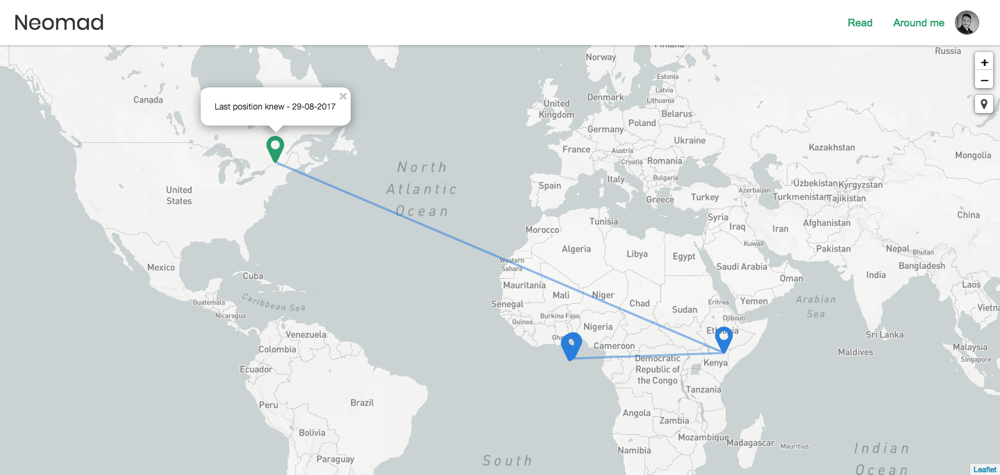
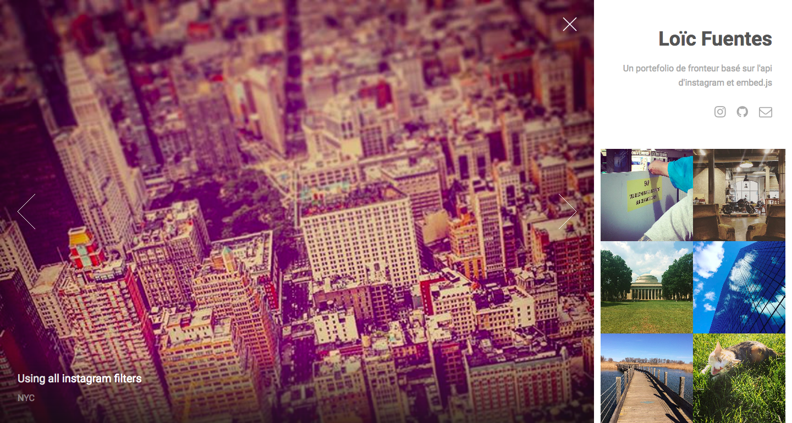
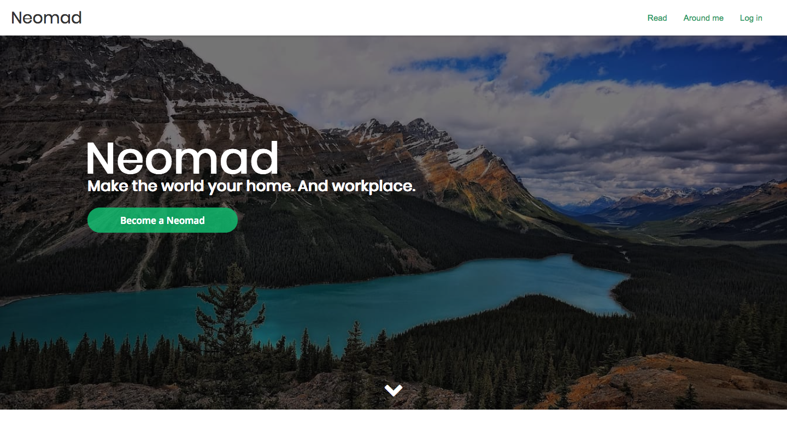
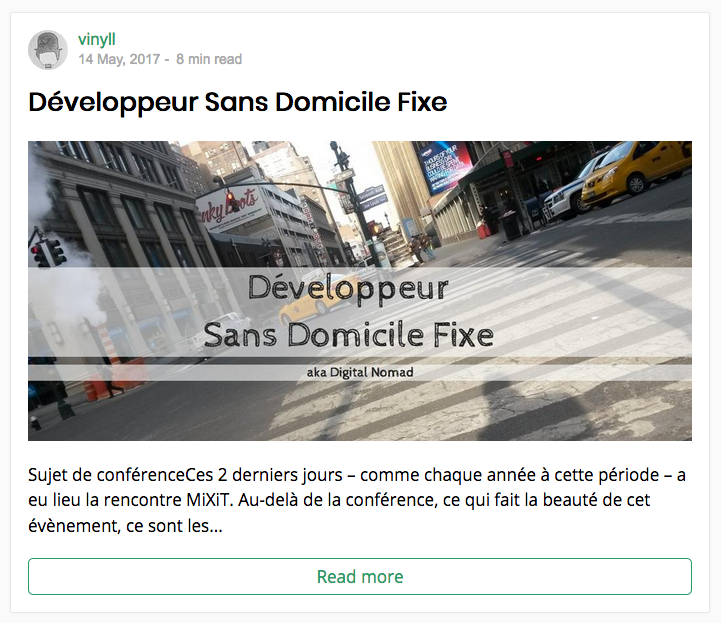
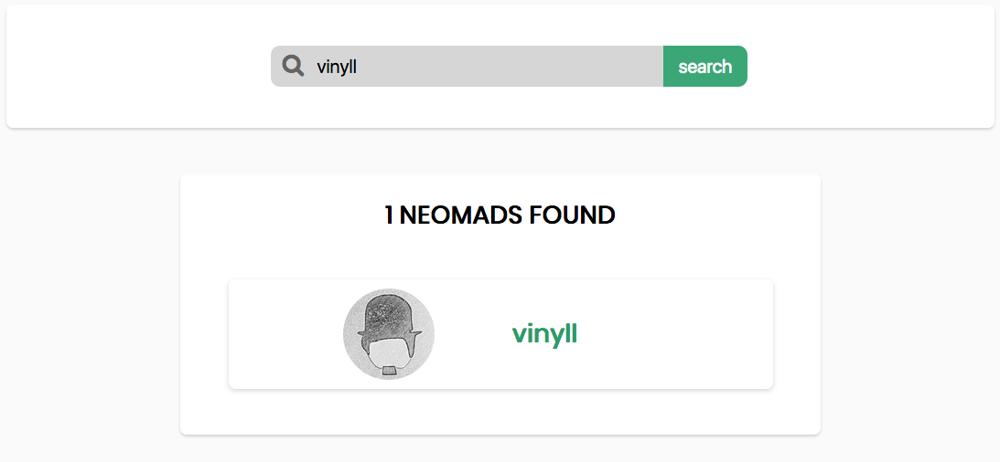
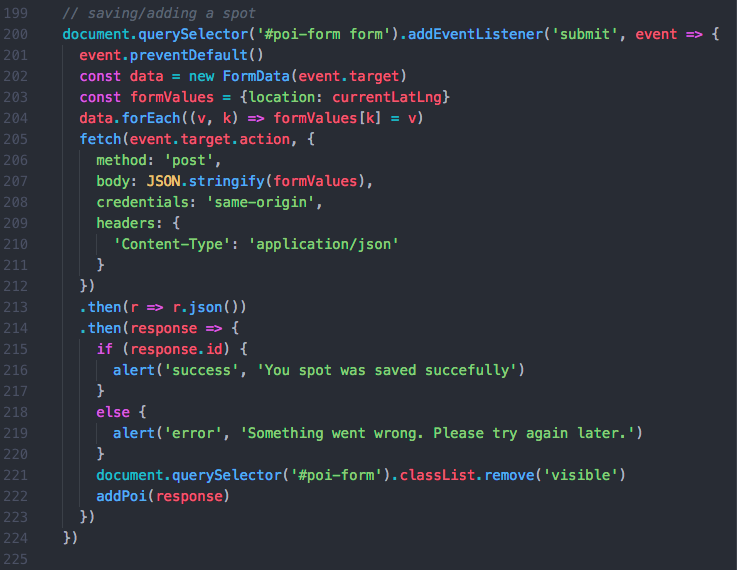
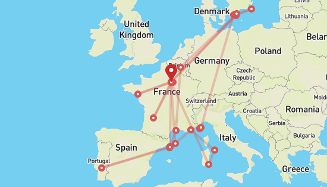
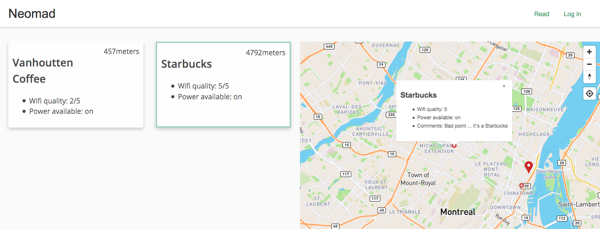

ETQ developpeur, je souhaite que le projet utilise une cartographie open-source conserver un système ouvert à tous
- Migration de
OSMàleafletJS,
- Extension de la class du
L.Iconpour changer le système des markers
.pngen.svg,
- Adaptation du
css,
- Adaptation du
preactJS/reactJS

ETQ neofite du code, je souhaite découvrir comment coder de manière simple afin de créer un portefolio qui me ressemble
HTML5/CSS3/Jekyll/_data/for in

ETQ explorateur, je veux comprendre la vision et la proposition de valeur afin de décider de participer ou explorer.
design/liquid/queries/font/anim

ETQ lecteur, je souhaite savoir le temps de lecture d'un article avant de le lire afin de me lancer ou non dans sa lecture
design/liquid/strftime('%d %B, %Y')
18 juillet, 2017
open-source

ETQ explorateur, je souhaite chercher des neomads ou des articles afin de trouver un pair ou explorer un sujet
form/get/liquid/design/CSS

ETQ explorateur, je souhaite proposer un point d'interêt afin de partager et sauver un lieux de travail
form/fetch/es6/api/post

ETQ neomad, je souhaite visualiser les étapes de mes trajets afin de mieux partager mon nomadisme
OSM/unshift/es6/map.on/python

ETQ remote, je souhaite trouver un poi proche de ma postion afin d'y travailler
- Mise en place de
webpack 2et components enreactJS,
- Utilsation de la cartographie
Open street mapet mapbox,
- Migration de
reactJSpour 226 kb àpreactJSpour 31,8 kb,
- Calcul de la distance de l'user par rapport aux pois,
- Utilisation de
webworkeretfetchpour itérer dans l'API,
- Rendu des détails des pois via
svgetprops,
- Création de
class GeolocateControlWrapper extends mapboxgl.GeolocateControlcar non natif.